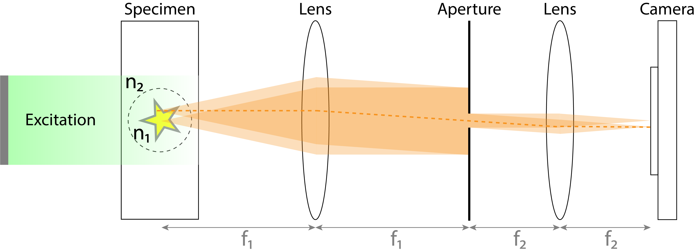
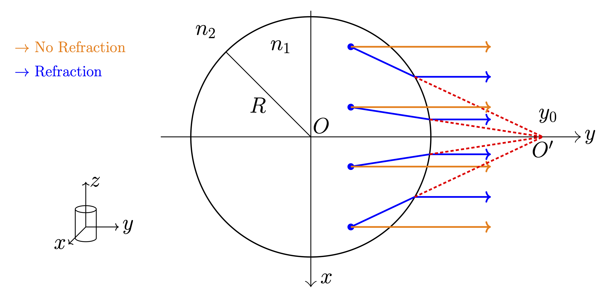
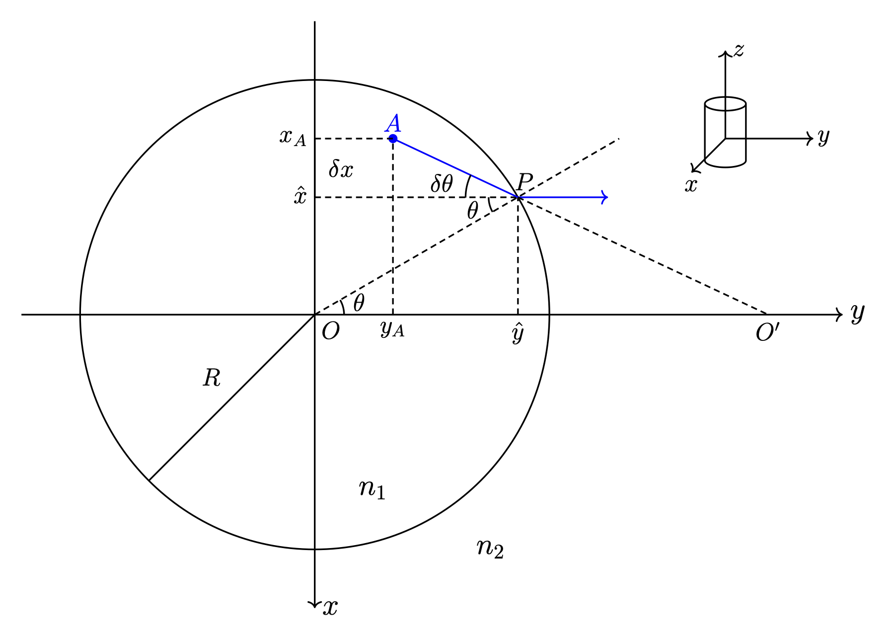

Problem Statement¶
Before an emission OPT experiment, the rotation axis is carefully adjusted to be perpendicular to the optical axis, so that the projection data of one slice of the volume are recorded in a row of pixels on the detector [11]. When the effect of refraction, diffraction, scattering, or defocusing is negligible, the emitted light propagates through the sample, the RI-matching liquid, and the telecentric lens system in parallel straight lines (see Fig. 16).


Fig. 16 Emission OPT geometry in the ideal case and in the non-ideal case where the refractive indices do not match. (Top) Emission OPT viewed from the top. The sample, fixed in agarose gel of RI \(n_1\), is placed inside a glass container filled with an immersion liquid of RI \(n_2\). The fluorophores inside the sample emit light that propagates through the object-space telecentric lens system and gets recorded by the camera. More details about the experimental system can be found in [13]. (Bottom) Ideal case (orange) and RI mismatch (blue). Only rays parallel to the optical axis are considered due to the low-NA fluorescence collection in OPT. The RI \(n_1\) of the agarose differs from the RI \(n_2\) of the immersion liquid. This creates a lensing effect, with a virtual focus at position \(O'\) on the optical axis.¶
Accordingly, the standard forward model for OPT is the Radon transform [94, 108], which in 3D is typically inverted in a slice-by-slice fashion using the filtered backprojection (FBP) algorithm [11, 94]. In reality, when the RI of the sample does not match the RI of the immersion liquid, the path along which light propagates is altered so that the parallel-beam assumption no longer holds.
Modeling of RI Mismatch¶
Let us consider a 2D transverse slice of the sample in the liquid bath as depicted in Fig. 16. We denote the RI of the agarose gel and the liquid bath as \(n_1\) and \(n_2\), respectively, and the radius of the cylinder as \(R\). When \(n_1=n_2\), light follows parallel straight lines as it travels through the sample, liquid bath, and finally the flat wall of the cuvette (see the orange lines in Fig. 16). When \(n_1 < n_2\), light is refracted at the interface that separates the agarose cylinder from the liquid bath. Propagation of the refracted light is illustrated by the blue lines in Fig. 16. The extended incident rays (blue lines inside the cylinder in Fig. 16) intersect at a point \(O'\) on the optical axis (dotted red lines in Fig. 16). Hence, the front wall (close to the detector side) of the cylinder can be thought of as a diverging lens whose virtual focus \(O'\) is on the optical axis. Rays inside the cylinder can then be approximated by a fan beam, the origin of which coincides with the virtual focus.
Such a picture is based on two common assumptions in ray optics, to keep our model computationally tractable. First, we make the paraxial assumption, namely, that the point emitters are close to the optical axis. Second, we consider difference in RIs to be small (\(\Delta n = |n_2-n_1| \ll n_1\)), so that the resulting origin of the fan beam is far away from the cylinder. Under these assumptions, we can calculate the location of the virtual focus of the diverging lens (i.e., the origin of the fan beam) as follows. Let us focus on the 2D transverse slice of the cylinder shown in Fig. 17).


Fig. 17 Geometry of light refraction at the interface of the cylinder and the immersion liquid. RIs inside and outside the circle are \(n_1\) and \(n_2\), respectively.¶
Relevant quantities are:
\(R\): radius of the disk
\(A (x_A, y_a)\): position of emitter
\(P (\hat x, \hat y)\): incident point on the surface of the cylinder
\(\delta x>0\): vertical displacement between the emitter and \(P\)
\(O'\): intersection of the incident ray with \(y\)-axis
\(\theta\): refracted angle such that the refracted ray is parallel to the optical axis
\((\theta + \delta \theta)\): incident angle
\(\Delta n=(n_2-n_1)\): RI mismatch which is assumed to be small with respect to \(n_1\)
Snell’s law states that
where we performed a first-order Taylor expansion. Eq. (27) implies that
Because \(\delta\theta\ll1\), in the right triangle with the longest side AP, one has that
with \(\hat y = \sqrt{R^2-(x_A-\delta x)^2} = \sqrt{R^2 - x_A^2} + \mathcal{O}(\Delta n)\), noticing \(\mathcal{O}(\delta x) \sim \mathcal{O}(\Delta n)\). Combining Eq. (29) and Eq. (28), we obtain that
We also have that
Substitution of Eq. (31) into Eq. (30) at order 1 in \(\Delta n\) yields that
The line (AP) thus satisfies that
The intersection for which \(x=0\) corresponds to
For \(x_A \ll R\) (i.e., for points close to the optical axis, which corresponds to the paraxial approximation), we have
The first term \(y_A\) is negligible compared to the second term as \(\Delta n \ll 1\) and \(y_A\leqslant R\). This implies that the distance of the origin \(O'\) of the fan beam to the origin of the coordinate system \(O\) is much larger than the sample diameter. We thus obtain that
The location \(y_0\) of the origin \(O'\) depends on the radius \(R\) of the cylinder and the refractive indices (\(n_1,n_2\)), but not on the position of our point \(A\) in the paraxial approximation. Further, the unitless quantity \(y_0/R\) is not affected by the magnification of the imaging system. We thus obtain a fan-beam geometry where all the rays inside the cylinder intersect at \(O'\). When \(n_1=n_2\), the origin of the fan beam becomes \(+\infty\); hence, the cone reduces to the standard parallel-beam model, as expected.
Correction Method¶
We see that when \(n_1 \neq n_2\), the physical model in Eq. (36) differs from the one typically used for reconstruction with a parallel-beam geometry. Yet, the proposed virtual-lens model is a better approximation of the actual physics. We are going to show that it is capable of reproducing and eventually correcting for some of the reconstruction artifacts. This 2D analysis corresponds to a fan-beam model; we can extend it to a cone-beam model when the height of the volume is sufficiently small. Cone-beam geometries are common in other tomographic applications, which allows us to leverage efficient implementations and reconstruction algorithms.
While Eq. (36) provides a good approximation of the beam origin in an idealized setting, two additional challenges arise in practice. First, the RI of the agarose gel evolves to match that of the immersion liquid (e.g., BABB) due to molecular diffusion. This process may extend over the standard clearing protocol time, making it difficult to measure the value of \(n_1\) and thus to calculate the origin using Eq. (36). Second, there is another physical effect to consider: the cylinder is displaced as it rotates because of an experimental offset between the axis of rotation and axis of the cylinder. Despite their best effort, instrumentalists have not yet been able to calibrate their setups accurately enough to avoid this offset [106, 108, 124]. For example, the seagull artifacts in [13] (cf. Fig. 2f therein) can be reduced by decreasing the offset between the axis of the cylinder and the axis of rotation. In the Appendix: Cone-Beam Shift of Origin due to Off-Center Rotation, we show that the cone-beam geometry remains a good approximation under these conditions, but with an origin that is closer to the sample than Eq. (36).
To tackle both challenges at once, we propose a method to automatically determine the optimal origin of the cone beam by minimizing a heuristic loss metric. More details are provided in the Results section.